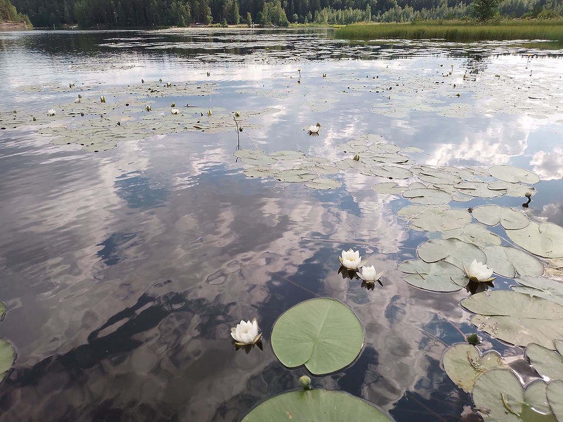
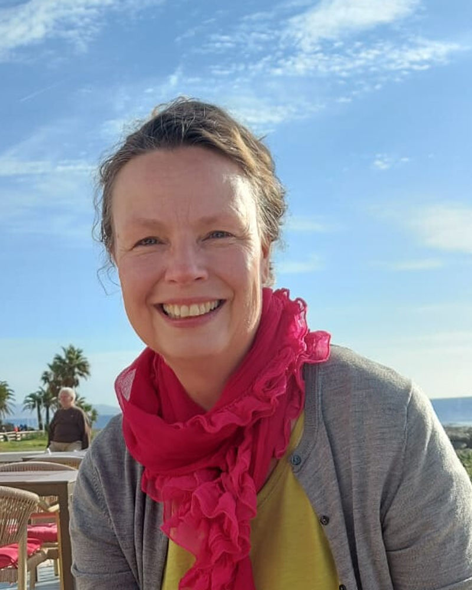

Tuntuuko, että ajatukset pyörivät kehää etkä löydä ulospääsyä? Onko stressi, ahdistus, jaksamisen haasteet tai elämän muutostilanteet alkaneet painaa liikaa? Et ole yksin – ja apua on saatavilla. Tarjoamme lyhytterapian lisäksi filosofista konsultaatiota ja äänimaljahoitoja.
Do you feel like your thoughts are going in circles and you can't find a way out? Have stress, anxiety, coping challenges, or life-changing situations started to weigh you down too much? You are not alone – and help is available. In addition to brief therapy, we offer philosophical consultation and singing bowl treatments.
Känner du att dina tankar snurrar i cirklar och att du inte hittar någon väg ut? Har stress, ångest, utmaningar med att hantera problem eller livsförändrande situationer börjat tynga dig för mycket? Du är inte ensam – och hjälp finns att få. Förutom korttidsterapi erbjuder vi filosofisk konsultation och klangskålsbehandlingar.
Ota yhteyttä Contact us Kontakta oss
Elämässä tulee hetkiä, jolloin omat keinot eivät riitä. Lyhytterapia tarjoaa sinulle matalan kynnyksen tukea silloin, kun kaipaat selkeyttä, helpotusta tai suuntaa. Jo muutama tapaaminen voi auttaa sinua. Katso alta palvelut, joista voit hyötyä juuri sinun tilanteessasi. Jokainen niistä tarjoaa omanlaistaan tukea jaksamiseen, muutoksiin ja mielen rauhoittamiseen – turvallisesti ja lempeästi.
There are moments in life when your own resources aren't enough. Brief therapy offers you low-threshold support when you're seeking clarity, relief, or direction. Even a few sessions can make a difference. Browse the services below that may benefit you in your particular situation. Each of them provides its own kind of support for coping, navigating change, and finding peace of mind — safely and gently.
Det finns tillfällen i livet när ens egna resurser inte räcker till. Korttidsterapi erbjuder dig lågtröskelstöd när du behöver klarhet, lindring eller vägledning. Även några få möten kan hjälpa dig. Se nedan vilka tjänster du kan dra nytta av i din specifika situation. Var och en av dem erbjuder sin egen typ av stöd för att hantera, förändra och lugna sinnet – säkert och varsamt.
Keskusteluapua elämän haasteisiin – selkeyttä, tukea ja oivalluksia muutamassa tapaamisessa.
Discussion help for life's challenges – clarity, support and insights in just a few meetings.
Diskussionshjälp för livets utmaningar – klarhet, stöd och insikter på bara några få möten.
Lue lisää → Learn more → Läs mer →Apua kuormituksen hallintaan ja palautumiseen – löydä keinoja keventää arkea.
Help with stress management and recovery – find ways to make everyday life easier.
Hjälp med stresshantering och återhämtning – hitta sätt att göra vardagen enklare.
Lue lisää → Learn more → Läs mer →Tukea jaksamiseen ja voimien palauttamiseen – saat tilan pysähtyä ja löytää suuntaa.
Support for coping and regaining strength – you will have the space to stop and find direction.
Stöd för att hantera situationen och återfå styrka – du kommer att ha utrymme att stanna upp och hitta riktning
Lue lisää → Learn more → Läs mer →Henkilökohtaista keskustelutukea työelämän muutostilanteissa – luottamuksellisesti ja inhimillisesti.
Personal discussion support in changing work situations – confidentially and humanely.
Personligt stöd i samtal i föränderliga situationer i arbetslivet – konfidentiellt och mänskligt.
Lue lisää → Learn more → Läs mer →Tutkivaa keskustelua elämän suurista kysymyksistä – ilman diagnooseja, kiirettä tai valmiita vastauksia.
An exploratory discussion about life's big questions – without diagnoses, haste or ready-made answers.
En utforskande diskussion om livets stora frågor – utan diagnoser, brådska eller färdiga svar.
Lue lisää → Learn more → Läs mer →Syvärentouttava hoito keholle ja mielelle äänivärähtelyn avulla – lempeästi ja levollisesti.
A deeply relaxing treatment for body and mind using sound vibrations – gently and calmly.
En djupt avslappnande behandling för kropp och själ med hjälp av ljudvibrationer – mjukt och lugnt.
Lue lisää → Learn more → Läs mer →
Tuntuuko, että arki hengittää niskaan, ajatus ei kulje tai suunta on hukassa? Onko stressi, uupumus, ihmissuhteet tai elämänmuutokset vieneet voimia? Ehkä yrität jaksaa yksin, vaikka kaipaisitkin tukea, tilaa ja uutta suuntaa.
Do you feel like everyday life is breathing down your neck, your thoughts are stuck, or you're lost? Have stress, exhaustion, relationships, or life changes sapped your strength? Maybe you're trying to cope alone, even though you'd like support, space, and a new direction.
Känns det som om vardagen andas dig i nacken, dina tankar fastnar eller du är vilsen? Har stress, utmattning, relationer eller livsförändringar tagit din styrka? Kanske försöker du klara dig ensam, även om du önskar stöd, utrymme och en ny riktning.
Olen Kristiina Salo, ja perustin Antimaterialin, jotta sinulla olisi paikka, jossa voit pysähtyä – tulla kuulluksi, keventää taakkaa ja löytää uusia näkökulmia. Tarjoan lyhytterapiaa, äänimaljahoitoja ja filosofista keskustelua sekä yksityishenkilöille että yrityksille. Palveluni sopivat sinulle, joka et ehkä kaipaa diagnoosia, mutta tarvitset ymmärrystä, selkeyttä ja keinoja edetä.
I am Kristiina Salo, and I founded Antimaterial so that you can have a place where you can stop – be heard, lighten your load and find new perspectives. I offer brief therapy, singing bowl treatments and philosophical discussions for both individuals and companies.
Jag är Kristiina Salo, och jag grundade Antimaterial för att du ska ha en plats där du kan stanna upp – bli hörd, lätta din börda och hitta nya perspektiv. Jag erbjuder kortterapi, behandlingar med sjungande skålar och filosofiska samtal för både privatpersoner och företag. Mina tjänster passar dig som kanske inte behöver en diagnos, men som behöver förståelse, klarhet och sätt att komma vidare.
My services are suitable for you, who may not need a diagnosis, but need understanding, clarity and ways to move forward.
Ota yhteyttä Contact us Kontakta ossSelkeyttä ja tukea elämän eri vaiheisiin – kun oma jaksaminen on koetuksella tai suunta epäselvä.
Clarity and support for different stages of life – when your own resilience is tested or your direction is unclear.
Tydlighet och stöd för olika skeden i livet – när din egen motståndskraft sätts på prov eller din riktning är oklar.
→Apua palautumiseen, rajaamiseen ja voimavarojen vahvistamiseen – yksilöllisesti tai osana työhyvinvointia.
Help with recovery, delineation and strengthening resources – individually or as part of workplace well-being.
Hjälp med återhämtning, avgränsning och resursstärkning – individuellt eller som en del av välbefinnandet på arbetsplatsen.
→Keskustelutukea työelämän muutos- ja irtisanomistilanteissa – inhimillisesti ja tulevaisuuteen katsoen. Työn ja elämän risteyskohta voi johtaa uuteen kukoistukseen.
Discussion support in situations of change and dismissal in working life – humanely and with an eye to the future. The intersection of work and life can lead to new flourishing.
Diskussionsstöd i förändrings- och uppsägningssituationer i arbetslivet – mänskligt och med blicken riktad mot framtiden. Skärningspunkten mellan arbete och liv kan leda till ny blomstring.
→Tilaa pohtia elämän isoja kysymyksiä ilman diagnooseja – kun kaipaat syvyyttä ja merkityksellisyyttä.
A space to reflect on life's big questions without diagnoses – when you crave depth and meaning.
Ett utrymme att reflektera över livets stora frågor utan diagnoser – när du längtar efter djup och mening.
→Syvärentouttava hoitomuoto, joka rauhoittaa kehoa ja mieltä – hiljaisuuden kautta palautumista. Sopii myös työyhteisöille tai palautumispäiviin.
A deeply relaxing treatment that calms the body and mind – recovery through silence. Also suitable for work communities or recovery days.
En djupt avslappnande behandling som lugnar kropp och själ – återhämtning genom tystnad. Även lämplig för arbetsgemenskaper eller återhämtningsdagar.
→Antimaterial syntyi ideasta, että joskus valo voi lisääntyä, vaikka lisätään suodattavia kerroksia. YouTube-video Bellin teoreemasta ja polarisoitujen linssien käyttäytymisestä muistuttaa siitä, miten ihmeellinen todellisuus onkaan.
Antimaterial was born from the idea that sometimes light can be increased even when additional layers of filtering are added. A YouTube video about Bell's theorem and the behavior of polarized lenses reminds us of how amazing reality is.
Antimaterial föddes ur idén att ljus ibland kan öka även när filtrerande lager läggs till. En YouTube-video om Bells sats och polariserade linsers beteende påminner oss om hur fantastisk verkligheten är.
Kun valonlähteen eteen laitetaan kaksi polarisoitua linssiä, valoa tulee läpi vähemmän, tai ei ollenkaan. Mutta mitä tapahtuu, kun väliin lisätään vielä kolmas linssi? Valoa pitäisi kaiken järjen mukaan tulla linssien läpi vähemmän kuin kahden linssin läpi – mutta sitä tuleekin enemmän. Tätä on vaikea uskoa jos ei omin silmin sitä näe. Antimaterial on kerros ymmärrystä, joka lisää valoa.
When you put two polarized lenses in front of a light source, less light, or none at all, comes through. But what happens when you add a third lens in between? By all logic, less light should come through the lenses than through two lenses – but more does. It's hard to believe this unless you see it with your own eyes. Antimaterial is a layer of understanding that adds light.
När två polariserade linser placeras framför en ljuskälla passerar mindre ljus, eller inget alls, igenom. Men vad händer när man lägger till ett tredje objektiv emellan? Enligt all logik borde mindre ljus komma genom linserna än genom två linser – men det gör mer. Det är svårt att tro detta om man inte ser det med egna ögon. Antimaterial är ett lager av förståelse som tillför ljus.
"Antimaterial on ymmärryksen kerros, joka lisää valoa."
"Antimaterial is a layer of understanding that adds light."
"Antimaterial är ett lager av förståelse som tillför ljus."